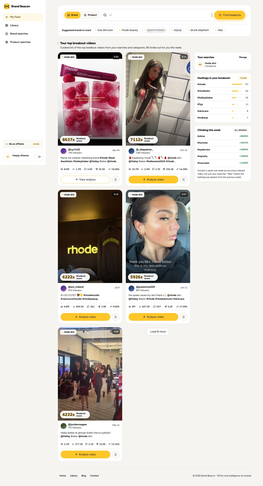
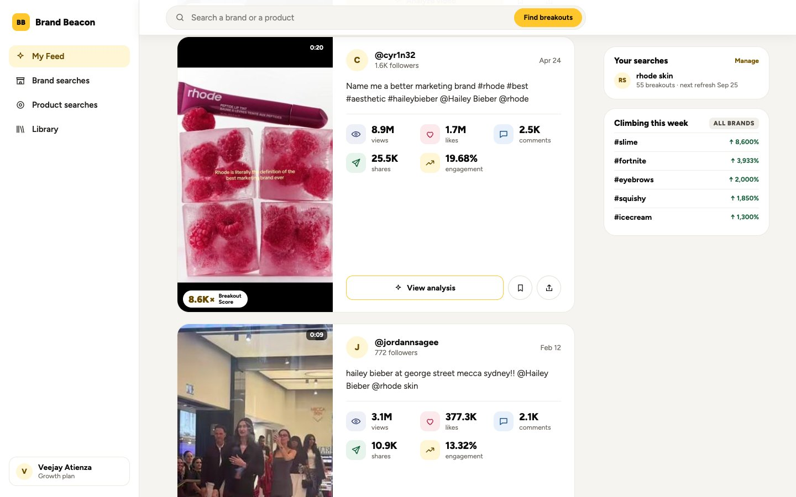
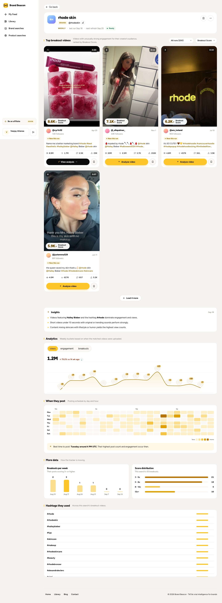
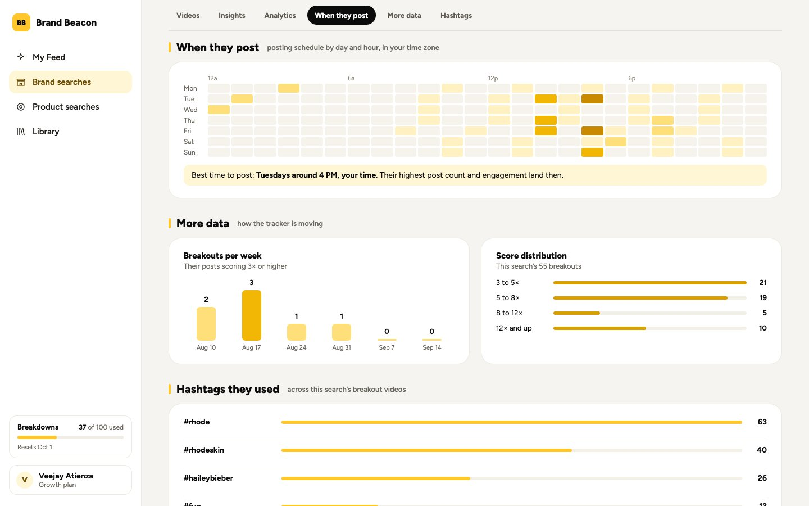

Before and after, with notes beside each change
Revised 28 Sep 2026 to Ivan’s notes: My Feed, brand readout and Share reworked; Breakout creators and My Brand Intelligence paused; admin restarted from a list of what to track. 29 Sep: a summary home for the admin, built from that list. 30 Sep: suggested keywords on My Feed, one readable top score and the original lower sections on the readout, and a creator CTA on the shared page. 30 Sep call: My Feed is one column of videos, like a Facebook feed, the readout keeps the live card and gets Share and a creator export, Share is one window with a note, and the admin home starts at visitors.
Left: the live app, captured on 19 Sep 2026. Right: the redesign, with a numbered note next to each part that changed. Each redesign is a working mockup you can scroll and click.
Real numbers come from the live rhode skin search and the saved admin pages. Admin screenshots have names and emails hidden. My Brand Intelligence and rows marked sample use invented data.
RESEARCH, 19 SEP: what the market does
Checked: TikTok One, Kalodata, FastMoss, Reacher, Euka, Modash, Upfluence, Aspire, GRIN, Insense, Billo, Foreplay, Motion, vidIQ, 1of10, Viewstats, Virlo, Rival IQ, Dash Social, Sprout, Exolyt, Metricool.
- Score: every outlier tool shows a multiple (7×) against the account's usual views. Viewstats uses the last 10 videos. Suggested definition: this video's views divided by the median views of that account's recent videos. Show a worked example and mark scores early for 48h. Never say 'vs followers'. Our live app says followers in one place.
- vidIQ's top color band starts at 10×. Our live scores read 1.8K× to 8.6K×, which suggests the formula divides by followers, not usual views. That is a formula question for Ivan, not a design one.
- Sharing: Foreplay and Motion share by no-login link. Nobody safe sends cold email from the app.
- Tiny creators mostly are not on TikTok One (sources disagree on the entry bar: 1K or 10K followers). Our creator list reaches people TikTok's own tool does not.
- Competitor pricing: Reacher $199, Modash $199, Kalodata about $46 to $99, 1of10 $29 to $69, Virlo $49 to $199. BB at $99 sits in the middle.
FOUND LIVE ON 19 SEP (for Lester)
- My Feed says rhode skin has 0 breakouts. Brand searches says 55.
- The readout filter says 'New this run (200)'. Brand searches says 88 new scanned, 55 new breakouts, 0 total.
- Breakouts per week shows 0 for Sep 7 and Sep 14 on a run marked new.
- The score reads '8637x' on My Feed and '8.6K×' on the readout.
- Three Breakout Score definitions: 'unusually strong engagement for their creator's audience' (readout), 'weighted engagement relative to its creator's follower count' (analysis), and '10× above the creator's own baseline' (homepage). Ivan to pick one.
- The Library subtitle uses a dash (copy lock).
- The login page tab still says 'Outlier Vault'.
- A live sales prospect appears as a public suggested brand.
- Insights regenerate on reload (dated Sep 18, then Sep 19, with different wording).
- The sidebar background stops at 900px on long pages.
1My Feed
Unlabeled stats, 3 giant cards per row, rhode skin shows 0 breakouts

- 1Search bar stays as it was. The suggestions under it now read Try searching, with a search icon on each: a tap runs that search. Every search already refreshes weekly and lands in Your searches, so running one is tracking it. Ivan asked for “suggested keywords to track”; this is only a wording change, and the keywords shown are samples. Search is always available: when this scrolls away, a slim search bar pins to the top (picture below). (Ivan, 28 and 30 Sep; Veejay)
- 2Activity line, like Facebook’s “X liked this”: “Sam sent you this” with the start of their note, or “14 people saved this”. It only shows when there is something to say, so most cards have none, and the first few here are plain. Names and counts are samples. (Veejay)
- 3One column of videos that keeps loading as you scroll, like a Facebook feed. The sidebars on each side frame it. (Ivan, 30 Sep call)
- 4Right sidebar, top to bottom: This week (new breakouts since the last refresh, and the top Breakout Score), Your searches, and Climbing keywords. It stays in view while the feed scrolls, pinned under the slim search bar.
- 5Climbing keywords replaces Climbing hashtags, since we search keywords, not hashtags. (Ivan, 30 Sep) A tap runs that search. The keywords and percentages shown are samples.
- 6Same card as the live app, laid on its side: the video on the left, and creator, caption, stats, Analyze, Save and Share (new) on the right. Each card is 500px tall instead of about 830px, so about two fit on a screen. (Ivan, 30 Sep call: “same card but information on the side”)
- 7The stats get more room than on the live card: bigger numbers with a label under each.
- 8Breakdowns used this month sits with the plan in the left menu: 37 of 100, resets Oct 1. It tells people whether they can press Analyze freely. The count is a sample.
- 9Not sorted by score. The mix here runs 6.2K×, 4.2K×, 7.1K×, 5.9K×, 8.6K×. About 1 in 4 comes from across Brand Beacon, the rest from your searches, with nothing on screen splitting them. (Ivan, 30 Sep call)
- 10An analyzed video shows View analysis instead of Analyze video. The analysis opens in the same window as the readout (row 4).
Once the big search scrolls away, a slim search bar slides in at the top, so search is always one click away. The left menu (with the breakdowns count) and the right sidebar stay in place while the feed scrolls.

2Brand readout
Key numbers buried at the bottom, times in UTC

- 1Export creator list: a CSV or copy-paste list of every creator behind this search’s breakouts. (Ivan, 30 Sep call, details in row 3)
- 2Header redesigned, same three numbers. One card: a brand mark, the search type, and the handle, refresh cadence and next run with icons. Under it, each number shows what it means: a bar for 55 of 200 scanned, the top video’s thumbnail beside 8.6K×, and a timeline from the first refresh to the next. (Numbers approved by Ivan, 30 Sep call)
- 3Section links under the top numbers: Videos, Insights, Analytics, When they post, More data, Hashtags. They pin to the top on scroll and highlight where you are, since the sections Ivan wanted kept sit far down a long page (picture below).
- 4Filters stay: which refresh, and sort. (Ivan liked “previous run, new to this run”)
- 5Activity line on cards that have one, same as My Feed: “Sam sent you this”, “Dana and 5 others saved this”. Names and counts are samples.
- 6The live card, three to a row instead of four, so the stats no longer run into each other. Each stat has its icon, as on My Feed. The rhode skin tag on each thumbnail came off, since the page is already rhode skin. Share sits next to Save. (Ivan, 30 Sep call)
- 7Every section below stays, with the same data: Analytics, When they post, More data, Hashtags they used. (Ivan: “we’ll keep these data points”)
- 8Insights are counts now, not opinions. Each card leads with a number read straight from this refresh: 4 of the top 5 tag Hailey Bieber (captions), 5 of the top 8 run under 10 seconds (video lengths), 8 of 8 come from accounts under 4K followers (follower counts). Squares show the share at a glance, the videos behind it sit underneath with the stat that counts, and each ends in a Do next. Written once per refresh and saved, so it no longer changes on reload (a dev note for Lester). (Veejay)
- 9Charts restyled, same data. Thin 2px line with a light wash, real week dates on the axis, the peak and this week’s 1.2M labelled. Heatmap uses one colour from light to dark with a Fewer / More legend and a ring on the best time. Columns get a 0 to 3 axis and the value on each. Score bands darken as the score rises. Every chart shows a tooltip on hover. The live page does not expose weekly view counts, so the line has no value axis yet: a note for Lester to feed the real numbers into the axis and tooltips.
- 10Breakouts per week still shows 0 for Sep 7 and Sep 14, as on the live page. That is the data bug in the list above, not a design choice.
- 11The left menu matches My Feed: it stays in place on scroll and shows breakdowns used this month (a sample count).
The section links stay pinned at the top and highlight the section on screen. The left menu stays in place.

3Breakout creators: one export button
Ivan, 30 Sep call: “just make it as simple as possible … export list of creators … a copy and paste, or if it’s like a CSV file … URLs and stuff like that.” The last version (emails, who sends it, how they receive it) was too much.
So it is one Export creator list button on the brand readout (see row 2). It offers Download CSV or Copy list, for all runs of that search. One row per creator:
| Handle | Profile URL | Best breakout URL | Breakout Score | Views | Followers | Breakouts in this search | Posted |
|---|---|---|---|---|---|---|---|
| @cyr1n32 | tiktok.com/@cyr1n32 | tiktok.com/@cyr1n32/video/… | 8.6K× | 8.9M | 1.6K | 1 | Apr 24 |
No emails, no in-app contact. The full mockup from 19 Sep stays in the repo (screens/breakout-creators.html) if it comes back later.
To confirm: should the export also add public contact details from a creator’s bio when they exist, or keep it to TikTok data for now?
5My Brand Intelligence PAUSED
Ivan, 28 Sep: “i’m not really getting a good understanding of what this will offer, let’s pause for now”
Removed from the sidebar on every screen. The mockup is kept in the repo (screens/my-brand-intelligence.html). When it comes back, it should start from a one-paragraph answer to “what does this tell a brand that a search does not” before any screen.
ABB admin: what to track first
Ivan, 28 Sep: “there’s too much to process here. can we start with the valuable list and priority of data points that we want to track, start with summaries, then we’ll break it down further.”
So the eight admin screens are parked and this is the starting point: the data points, in priority order. Priority 1 is the summary, one number each, this week against last week. Priority 2 and 3 come once the summary is agreed. Pages for blog, coupons and the video index are admin tools rather than data points, so they are left out for now.
| Priority | Data point | Shown as | Tracked today? |
|---|---|---|---|
| 1 | New sign-ups, team and Ignite accounts excluded | this week vs last week | Partly. Counts disagree across pages and our own accounts count as customers. |
| 1 | Paying customers and MRR | count, new paid, cancelled, MRR | Partly. Paid count yes, MRR not tracked. |
| 1 | Free to paid | % converted, and how many used a coupon | Partly. 3 of the 4 paid conversions used a coupon. |
| 1 | Where sign-ups come from | by channel or ref link | No. Every source reads “not recorded”. |
| 1 | Activation | signed up, ran a first search, ran a first breakdown | Partly. Searches are logged, the step-by-step count is not. |
| 2 | Free quota walls | how many hit the 4th search and 4th breakdown wall, and how many upgrade from it | No. New with the v4 flow. |
| 2 | Shares | links created, links opened, sign-ups from a shared page | No. New with Share. |
| 2 | Failed searches and errors | grouped by type | Partly. 392 errors listed one by one, mostly one repeating Apify error. |
| 3 | Most searched brands and products | top 10 this week | Yes, in Searches and the Keyword Index. |
| 3 | Second-week return | signed in again 7 to 14 days after sign-up | No. |
| 3 | Cost per search | Apify spend divided by searches | No. |
To confirm: is this the right top 5? The summary screen built from it is the next row.
The earlier eight-screen pass is still in the repo (screens/admin-*.html) if any piece of it is useful later.
BBB admin: home
WHAT CHANGED (Ivan, 30 Sep call)
Ivan: the dashboard is “pretty good, it just needs massaging”, and he likes graphs. So this keeps the structure and changes what he named.
- The funnel starts at unique visitors: visitors, signed up, first search, trial, paid. Visitors is not tracked yet, so it shows as an empty bar.
- Time frame: 1D, 3D, 7D, 30D, as on the live dashboard.
- Daily momentum and Recent activity are back from the live page. Ivan uses Recent activity to see at a glance who signed up, subscribed or used a coupon.
- Where they come from stays. It reads “not recorded” for all 33 until each channel has its own tracking link (a task for Veejay with Lester and the platform marketers).
- Searches and viral videos stay as numbers with the change against the previous period.
- Errors moved to the bottom and shrank to one line. Less urgent than the top of the page made them look.
- What else we could track: five ideas, each drawn the way it would look, as Ivan asked for. The numbers in those five are samples.
STILL REAL, FROM THE SAVED PAGES
- Paid: 0 on one card, 4 in the funnel, 12 as the live count.
- Sign-ups: 8 on the chart, 33 in the funnel, same range.
- 3 of the 4 paid conversions used a coupon.
Pick from the five ideas: which are worth building first?
- 1IVAN: 1D, 3D, 7D, 30D. The team switch stays, off by default.
- 2The three numbers from last round stay: paying customers, MRR, new sign-ups.
- 3IVAN: the funnel starts at unique visitors. Conversion between steps on each bar.
- 4IVAN: graphs. Daily momentum is traced from the saved Sep 18 page.
- 5IVAN: keep Recent activity, with filters for sign-ups, subscriptions and coupons. No names shown in this mockup.
- 6IVAN: keep Where they come from. VEEJAY: owns the tracking links.
- 7IVAN: four or five ideas for what else to add, each drawn out. Sample numbers.
- 8IVAN: errors to the bottom.
DEV SPEC FOR LESTER
One definition per number, used on every admin page. Table names are our best guess from the admin screens, so correct them where the schema differs.
| Metric | Definition | Source | Missing today |
|---|---|---|---|
| Team account | users.is_internal = true, set once per account (staff, Ignite, test). Every metric below starts with WHERE NOT is_internal. | users (new column) | No flag exists. Needs the column plus a one-off backfill from the current team list. |
| Comped account | Active subscription whose coupon takes the price to $0 (IVANVIP, IGNITEBB, BBCN100OFF if 100% off). | subscriptions, coupon usage | Discount amount per coupon is not shown in admin. |
| Paying customers | COUNT(DISTINCT user_id) FROM subscriptions WHERE status = 'active' AND NOT internal AND NOT comped | subscriptions (status values match Stripe: active, trialing, past due, canceled) | Nothing new, only the two exclusions. |
| MRR | SUM(price after discount, yearly / 12) over paying customers, read from Stripe | Stripe subscriptions | Not stored or shown anywhere today. |
| Unique visitors | Distinct visitors to brandbeacon.io in range, bots and our own IPs left out | Site analytics on the landing page (Plausible or GA4), read by API | Not captured. Needed for the first step of the funnel. |
| New sign-ups | COUNT(*) FROM users WHERE created_at IN range AND NOT internal | users | The old chart (8) and funnel (33) disagree for the same range. Use this one query for both. |
| Trial starts / trial to paid | Trials with a start date in range; of those, how many are paying customers today | subscriptions (trial end date) | Both live trials on 18 Sep were team accounts. The clean live count is 0. |
| Sign-up to paid | Sign-ups in range who are paying customers today, divided by sign-ups in range | users + subscriptions | Coupon upgrades count as paid today. |
| Sign-up source | First-touch utm_source, utm_medium and ref, saved on the account at sign-up | users (new columns), cookie set on landing | Not captured. All 33 read “not recorded”. |
| Searches run | COUNT(*) FROM searches WHERE status = 'completed' AND created_at IN range AND NOT internal; failed ones counted apart | searches, keyword searches | Dashboard says 286, Searches page lists 291. One query for both. |
| Analyses run | Completed video breakdowns in range, a total rather than a per-account average | analyses | Only “15.6 per adopter” is shown today. |
| Cost per search | Apify spend in range divided by all searches run (team included) | Apify run usage, stored per search | Not captured. Apify reports a cost per run, which could be saved on each search. |
| Errors by type | COUNT(*) FROM critical_errors WHERE resolved_at IS NULL GROUP BY event_key, with a mute flag per key | critical error log | Listed one row per error today (392). |
Order of work: the team flag first, since it changes every other number. Then MRR from Stripe, then sign-up source capture. Cost per search can follow.
Questions for Ivan: which accounts count as team (all Ignite logins, agency partners)? Are IVANVIP and IGNITEBB 100% off, and should coupon accounts ever count as paying? Should a week run Monday to Sunday, and in which time zone? Can Lester read the Apify account to get spend per run?